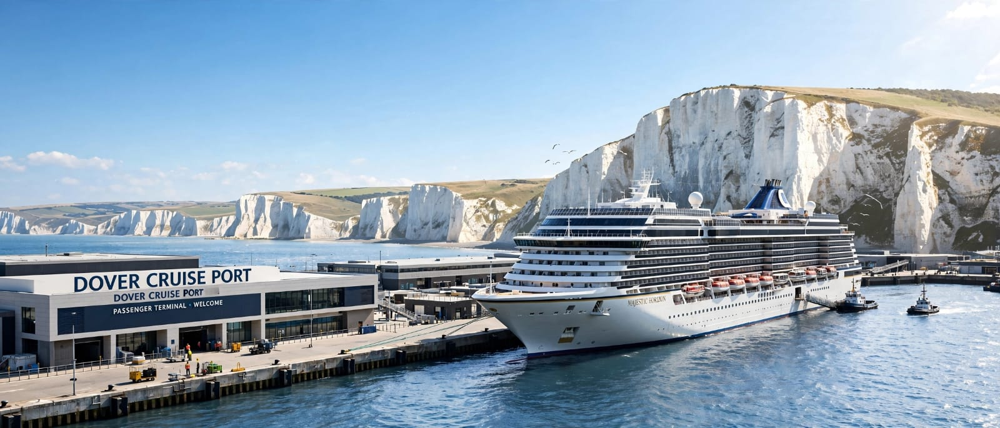
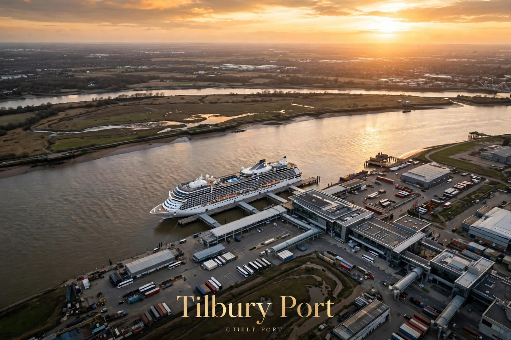
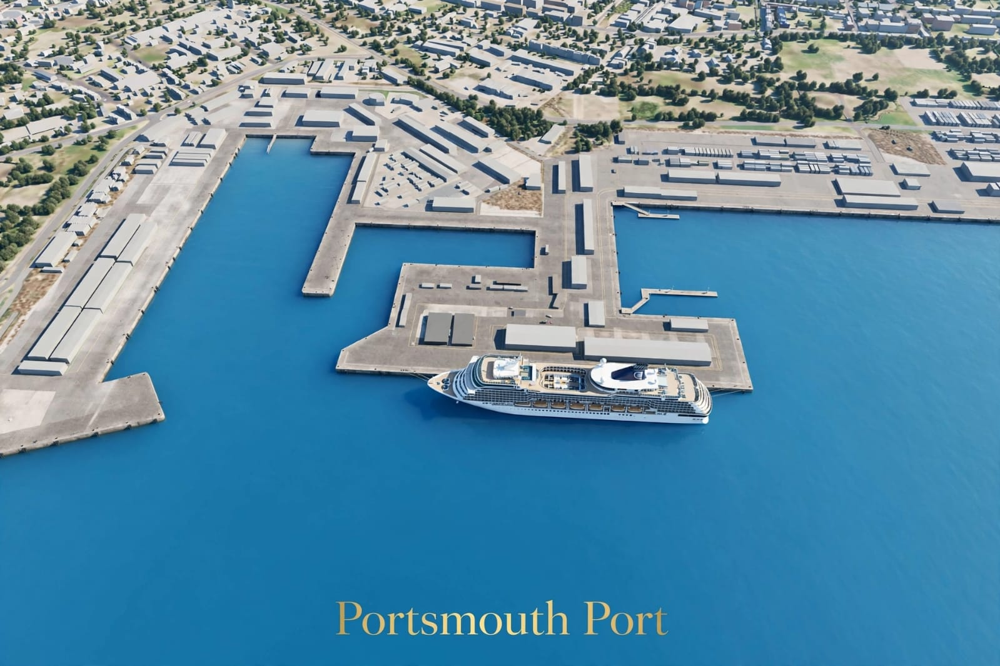
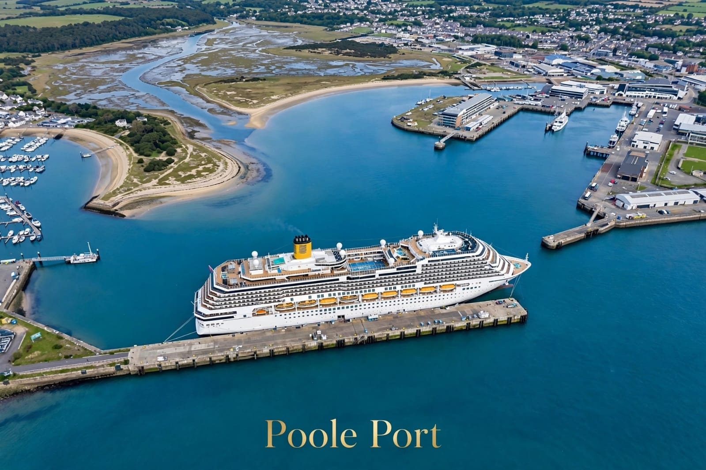

Private Chauffeur Port Transfers
Luxury door-to-door transportation connecting major UK passenger ports and cruise terminals with London Heathrow, Gatwick Airport, Central London hotels, and nationwide destinations.
UK Cruise & Ferry Ports
Pre-booked private transport for cruise voyagers, ferry travelers, families, and executive groups. Select a port below to view detailed terminal facilities, visual portfolios, and route information.

Southampton Cruise Port Transfers
Connecting all 5 Southampton Cruise Terminals (Horizon, Mayflower, Ocean, City, QEII) with London Heathrow, Gatwick Airport, Central London hotels, and UK addresses.
- All 5 Terminals Covered: Direct drop-off and pickup at Horizon, Mayflower, Ocean, City, and Queen Elizabeth II terminals.
- Airport Connections: Punctual private transfers to London Heathrow (~65 miles / 75 mins) and Gatwick (~85 miles / 90 mins).
- Cruise & Flight Monitoring: Complimentary meet and greet inside terminal arrivals with live docking and flight delay tracking.

Dover Port Transfers
Pre-booked private transfers for ferry and cruise passengers at the Port of Dover, connecting directly with Central London, Heathrow, Gatwick, and regional hotels.
- Ferry & Cruise Docks: Direct chauffeur access to both Eastern Ferry Docks and Western Cruise Terminals 1 & 2.
- Cross-Country Links: Smooth motorway journeys via M20/A2 to London Heathrow, London City, and Gatwick Airport.
- Meet & Greet Included: Drivers welcome passengers inside terminal arrival lounges with flight and ferry tracking.

Tilbury Port Transfers
Dedicated private transfer service to the London Cruise Terminal at Tilbury, situated just 25 miles downriver from Central London.
- Closest Port to London: Located only ~25 miles east of Central London and 22 miles from London City Airport.
- Direct M25 Corridor: Swift motorway connections via A13 and M25 to Stansted, Heathrow, and Gatwick airports.
- Historic Cruise Terminal: Seamless curb-to-baggage service right at the Grade II listed passenger terminal lounge.

Portsmouth International Port Transfers
Reliable private door-to-door transportation for cruise passengers and cross-Channel ferry travelers heading to France, Spain, and the Channel Islands.
- Modern Passenger Terminal: Direct pickup and drop-off at the multi-million-pound eco-friendly terminal building.
- Direct Motorway Access: Strategically connected directly to the M27/A3(M) corridor for rapid London transfers.
- Ferry & Cruise Operations: Full service for Brittany Ferries, Condor Ferries, and boutique luxury cruise liners.

Poole Port Transfers – Bournemouth Area
Convenient door-to-door private transfers for passengers travelling through the Port of Poole and the surrounding Bournemouth & Dorset area.
- Poole Harbour & Terminals: Direct terminal drop-off for Brittany Ferries, Condor Ferries, and cruise berths.
- Bournemouth Area Coverage: Chauffeur pickups from luxury coastal hotels, holiday resorts, and private residences.
- Long-Distance London Transit: Comfortable private transfers connecting Dorset with Heathrow, Gatwick, and Central London.
Need Assistance Booking a Port Transfer?
Our dedicated dispatch team operates around the clock to assist cruise passengers and travel agents with bespoke bookings, flight connections, and vehicle allocations.